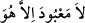
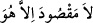
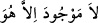

yol eri yoktur. Bu durumda olan bir aziz yolda gidiyordu. Dervişin biri yanına gelip
“Nereden geliyorsun?” diye sordu. “ (Hû)” diye cevap verdi. “Nereye gidiyorsun?”
dedi, “ (Hû)” diye karşılık verdi. “Maksudun nedir?” sorusuna, “ (Hû)” dedi. Ne
(Hû)” dedi. Ne
soruyorsa o “ (Hû)” diye cevap veriyordu. Bu hâl, söylenen şu söz gibidir:
(Hû)” diye cevap veriyordu. Bu hâl, söylenen şu söz gibidir:
İki gözümde de senin hayalin vardır
Neye bakacak olsam, seni sanırım
Velhâsıl, “ (O’ndan başka hakîkî ma’bûd yoktur) ifâdesi âbidler için; “ (O’ndan başka hakîkî maksûd yoktur) âşıklar için ve “ (O’ndan
başka hakîkî mevcûd (varlık) yoktur)” ifâdesi de (hakiki varlığı bulan) vecd ve keşif
ehli içindir.[155]
İbnü’l-Esir, Usdü’l-ğabe, I, 121.
Terğîb, I, 19.
Allah Teâlâ’nın yardımı ve lütfuyla, el-Kasas sûresinin tefsiri hicrî 1109 yılının
Rabîülevvel ayının (Ekim 1697) sonlarında bitmiş oldu.